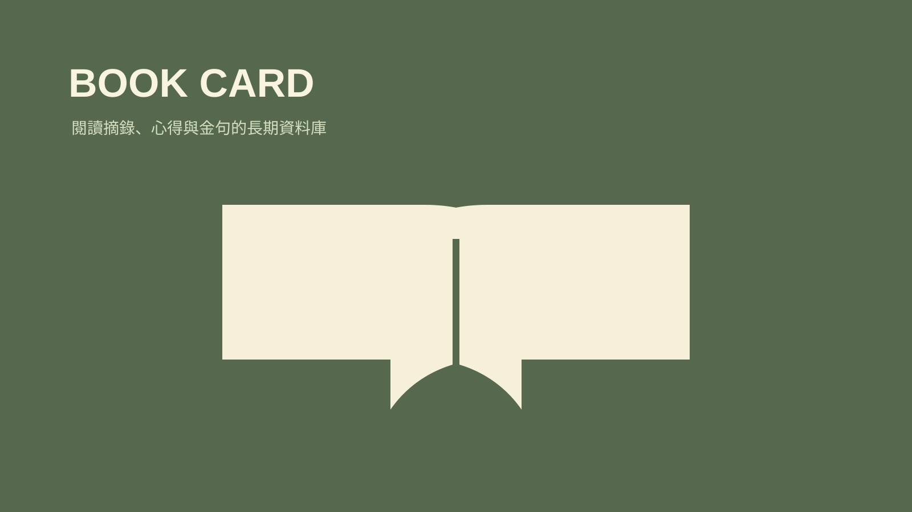

技能包 · 學習工具
書籍知識卡
2026.08 · 個人專案

FIG. 29 — 產品主畫面
關於這個作品
書籍知識卡將一本書的基礎資訊、摘錄、讀後想法與金句放進可連結的結構，同時維護分類 MOC 與 read100 進度。它讓讀完不是結束，而是把閱讀轉為日後可回看的個人資料庫。
作品亮點
建立結合摘錄、心得與書目資訊的書籍卡
萃取金句並連回來源與主題
維護分類 MOC 與 read100 閱讀進度
讓閱讀紀錄可以持續補充、交叉連結與回顧